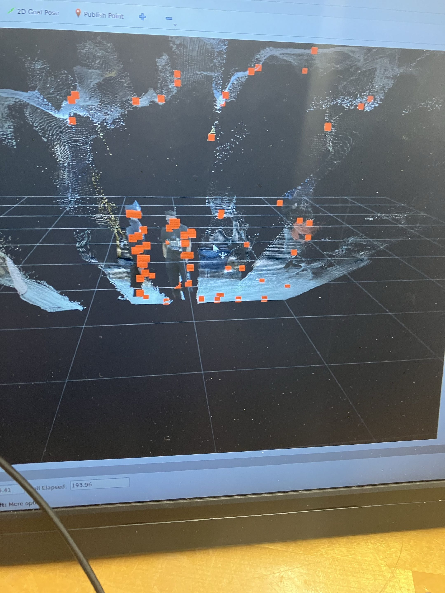
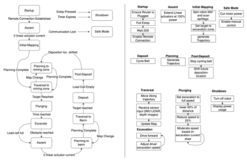
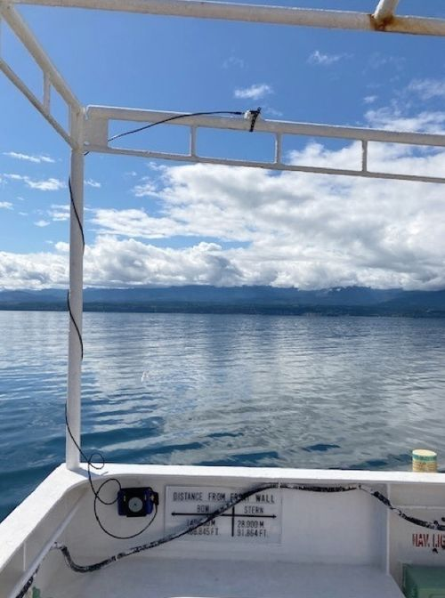
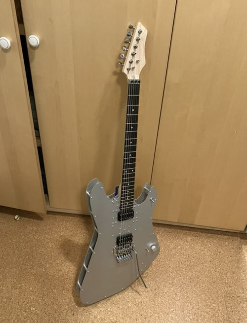
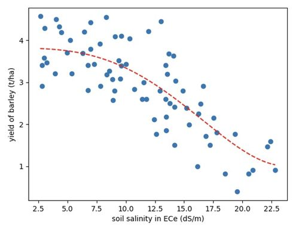
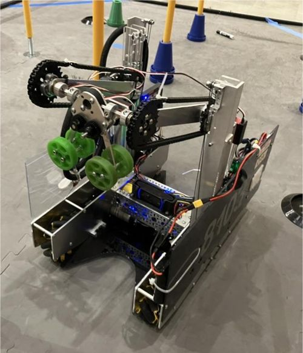
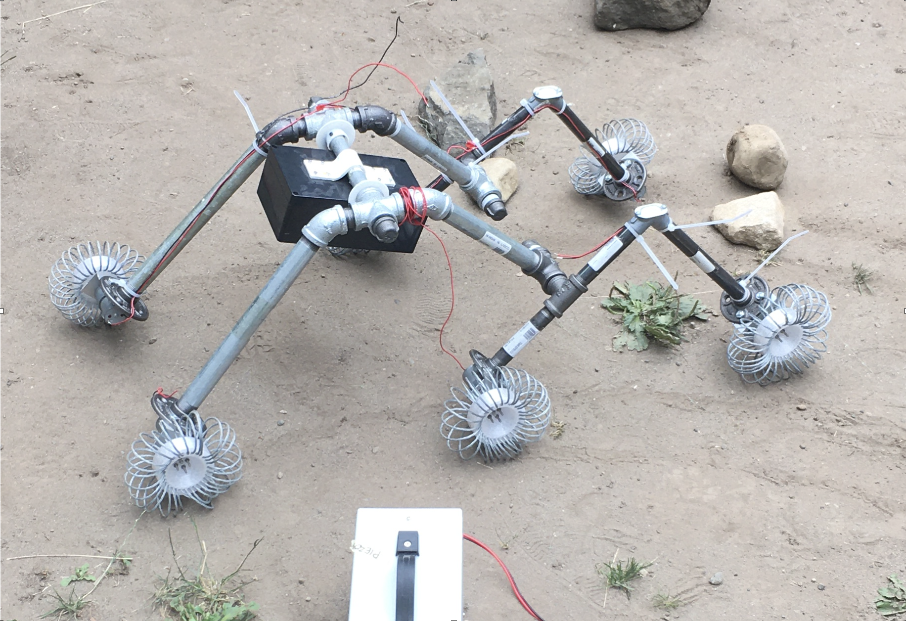
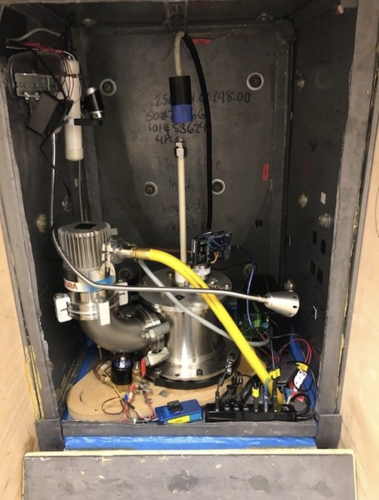
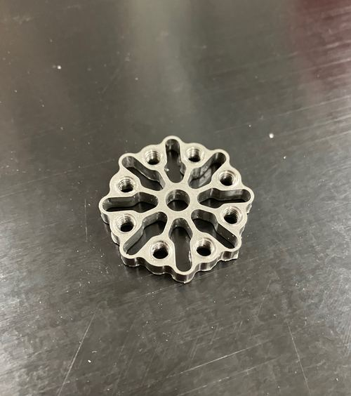

Leading the Purdue VFS software and autonomy team to develop a real-time visual obstacle detection system for autonomous drones, tracking obstacles in stereo-camera feeds for our GoAERO Prize entry.
Robot Operating System (ROS) · Software Development

Led Systems Engineering for Purdue Lunabotics, documenting system architecture, operational scenarios, and requirements to guide design and development.
Systems Engineering · Engineering Documentation

Engineered and 3D-printed a custom GPS mount for ship rail installation, designed for a captain's specific use case and secure fastening on marine hardware. Still in active use.
CAD Design · 3D Printing · Mechanical Design

Designed and built an ergonomic electric guitar body from three laser-cut aluminum plates, with modular electronics mounting for simplified servicing.
Autodesk Inventor · Laser Cutting · Electronics Integration

Built a Python library for tree-based genetic programming, applying evolutionary algorithms to symbolic regression to derive closed-form equations from experimental data.
Python · Genetic Algorithms

Led fabrication engineering for 4 years in FIRST Tech Challenge, machining drivetrain components and custom mechanisms under competition timelines.
Manufacturing · CNC Machining · Mechanical Design

Designed and fabricated a rocker-bogie rover inspired by NASA's Mars Curiosity architecture, with airless coil-spring wheels tested across varied terrain.
Mechanical Design · Materials Engineering · Robotics

Contributed to a working inertial confinement fusion reactor, working on high-voltage system design, documentation, and radiation shielding at 40+ kV.
High-Voltage Systems · Instrumentation · Physics Engineering

Designed and machined custom compliant shock absorbers and couplers for FTC robot drivetrains, selecting materials by stiffness and impact-absorption needs.
Mechanical Design · Material Selection · Machining